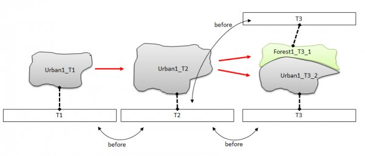
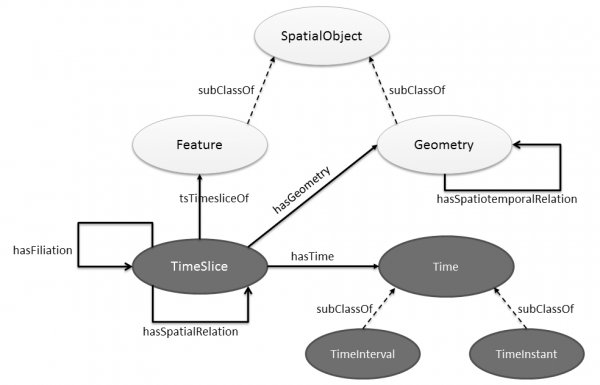
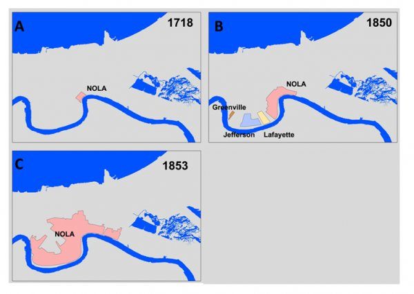
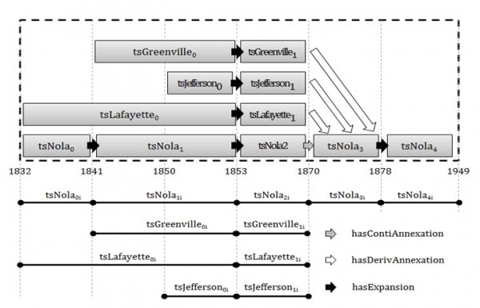

Continuum¶
Project overview¶
This project was the subject of Benjamin Harbelot's PhD, funded by an ANRT-DGA CIFRE grant.
Spatio-temporal modelling¶
Geographic Information Systems have gradually established themselves as powerful tools for organising, representing, analysing and visualising geographic data. However, integrating a temporal dimension into GIS remains a research challenge in geographic information science. Developing spatio-temporal models suited to the study of real geographic phenomena has therefore become a major issue in designing information systems dedicated to the evolution of spatial entities. In this project, we propose a new spatio-temporal model based on an ontology integrating expert knowledge on the geographic data represented. The semantic capabilities of this model help experts represent and analyse a spatio-temporal phenomenon by taking into account contextual information from the geographic environment.

The Continuum model manages the evolution of spatio-temporal entities. A spatio-temporal entity is a representation of real-world entities made up of an identity, descriptive properties and spatial properties. While identity describes the fixed semantics of the entity, descriptive and spatial properties can change over time and form the dynamic part of the entity. When the identity of an entity changes, a particular type of evolution occurs in which the spatio-temporal entity is transformed into a new entity.
The Continuum model makes it possible to track, analyse and query the life cycle of an entity. The concept of identity is at the heart of the model. Identity can be defined as the unique character of an object, independent of its attributes or values: the feature that distinguishes it from all others. Besides identity, the model also relies on filiation relations to track objects over time.
The filiation relation to capture evolutions
The filiation relation defines the succession link between the different representations of the same object at different moments in time. Filiation relations are useful for elementary changes such as splits or mergers of entities. Other, more or less complex spatial changes exist and require identifying "parent" and "child" entities. At this stage, filiation is based only on spatial relations, which is why it can be called spatial filiation in the context of spatial changes. These spatial changes can also reveal changes in the nature of the entity. This is why the filiation relation is closely linked to the notion of identity. It is essential for maintaining the identity of an evolving entity and tracking its evolution over time. New entities that may result from an evolution must also be identified. Setting up a filiation relation creates a dependence on identity. There are two general types of filiation relation: continuation and derivation. In the first case, identity is preserved: the entity continues to exist but has undergone a change. In the second case, a new entity is created from another after undergoing an evolution. Unlike continuation relations, derivation relations can involve several entities at once.

The ontology as a basis for spatio-temporal modelling
While the filiation relation is at the heart of spatio-temporal modelling, entities in a geographic space can have various spatial relations (topological, metric or directional) or semantic relations with each other, whatever their state of evolution. It therefore seems natural to see the modelling of a phenomenon over time as a network in which entities and their states are nodes and relations are edges. Modelling a phenomenon thus generates a complex graph of temporal, semantic, spatial and filiation relations. An ontology is a data model able to represent the concepts of a domain and the relations between them. Concepts in an ontology are organised in a graph that can model all the relations needed for spatio-temporal modelling. Traditionally used to represent the elements of a knowledge domain, ontologies are based on the notions of individuals, classes, attributes, relations and events. Entities can therefore be treated as individuals and grouped into classes defined by entity type. Attributes are the properties, characteristics or parameters that entities can have and share, while relations define the links between entities. Events correspond to changes in attributes or relations. Available information on entities may be more or less precise: for example, an entity of type "body of water" can be specialised as "pond", "lake", "sea", "ocean", etc. The same specialisation or generalisation can be observed in relations between entities: a "spatial relation" between two entities can be specialised as "intersection", "adjacency", etc. In both cases, the ontology provides a hierarchy based on subsumption, making it possible to represent or use knowledge at different levels of detail. While the ontology is a particularly complete basis for representing and classifying knowledge about a domain, it is also widely used to reason about the modelled entities, and offers analytical capabilities superior to traditional information systems.
The following figure shows the conurbation phenomenon of New Orleans, which the Continuum model can capture. The details of this evolution are shown in the figure in the next section.

Overview of the Continuum model¶
The Continuum model takes advantage of the spatial capabilities of the GeoSPARQL standard and of the methods proposed in fluent ontologies to represent evolution. It also represents the filiation link between consecutive timeslices of an entity. The Continuum model was proposed to meet the need for modelling changes to spatial entities. These changes are spatial (related to the position or spatial footprint of the entity), semantic, or related to the identity of entities. The model therefore integrates and distinguishes relations related to space (topological relations), time (Allen relations), semantics and identity (filiation relation).
The following figure shows the detailed conurbation phenomenon of New Orleans.

This work is funded by the DGA
and the Burgundy Regional Council:
Publications¶
Article dans une revue
- Helbert Arenas, Benjamin Harbelot, Christophe Cruz. Reasoning with Vague Spatial Information from Upper Mesopotamia (2000BC). Procedia Environmental Sciences, Elsevier, 2015, Spatial Statistics conference 2015, 27, pp.Pages 58-65.
- Benjamin Harbelot, Helbert Arenas, Christophe Cruz. LC3: A spatio-temporal and semantic model for knowledge discovery from geospatial datasets. Journal of Web Semantics, Elsevier, 2015.
Chapitre d'oeuvrage
- Helbert Arenas, Benjamin Harbelot, Christophe Cruz. LC3 A Spatial-temporal Data Model to Study Qualified Land Cover Changes. Land Use and Land Cover Semantics, Principles, Best Practices and Prospects, 2015.
- Benjamin Harbelot, Helbert Arenas, Christophe Cruz. Using Semantic Web Technologies to Follow the Evolution of Entities in Time and Space. International Journal On Advances in Intelligent Systems, Freimut Bodendorf, University of Erlangen-Nuernberg, Germany, pp.256 to 265, 2013. 〈hal-00930176〉
Communication dans un congrès
- Benjamin Harbelot, Helbert Arenas, Christophe Cruz. LC3: un modèle spatial et sémantique pour découvrir la connaissance dans les jeux de données géospatiaux. Extraction et Gestion de la Connaissance, Jan 2015, Luxembourg, Luxembourg.
- Helbert Arenas, Benjamin Harbelot, Christophe Cruz. A Semantic analysis of moving objects, using as a case study maritime voyages from eighteenth and nineteenth centuries. the Sixth International Conference on Advanced Geographic Information Systems, Applications, and Services, Mar 2014, Barcelona, Spain.
- Helbert Arenas, Benjamin Harbelot, Christophe Cruz. Implementing a Semantic Catalogue of Geospatial Data.. the Tenth International Conference on Web Information Systems and Technologies, Apr 2014, Barcelona, Spain.
- Benjamin Harbelot, Helbert Arenas, Christophe Cruz. un modèle sémantique spatio-temporel pour capturer la dynamique des environnements. 14 ème conférence Extraction et Gestion des Connaissances, Jan 2014, Rennes, France. pp.39 à 54, 2014.
- Benjamin Harbelot, Helbert Arenas, Christophe Cruz. A Semantic Model to Query Spatial-Temporal Data. The 6th International Workshop on Information Fusion and Geographic Information Systems: Environmental and Urban Challenges, May 2013, St. Petersburg, Russia.
- Benjamin Harbelot, Helbert Arenas, Christophe Cruz. Continuum: A spatiotemporal data model to represent and qualify filiation relationships. 4th ACM SIGSPATIAL International Workshop on GeoStreaming (IWGS) 2013, Oct 2013, Orlando, United States. 〈hal-00869861〉
- Benjamin Harbelot, Helbert Arenas, Christophe Cruz. Semantics for Spatio-temporal "Smart Queries". 9th International Conference on Web Information Systems and Technologies (WEBIST), May 2013, Auchen, Germany.
- Helbert Arenas, Benjamin Harbelot, Christophe Cruz. A Semantic Web Approach for Geodata Discovery. 7th International Workshop on Semantic and Conceptual Issues in GIS (SeCoGIS 2013), Nov 2013, Hong Kong, France.
- Benjamin Harbelot, Helbert Arenas, Christophe Cruz. The spatio-temporal semantics from a perdurantism perspective. In Proceedings of the Fifth International Conference on Advanced Geographic Information Systems, Applications, and Services GEOProcessing, Feb 2013, Nice, France.
Poster
- Helbert Arenas, Benjamin Harbelot, Christophe Cruz. Multidimensional Land Cover Change Analysis using Vector Change and Land Cover Taxonomies. Spatial Statistics: Emerging Patterns, Jun 2015, Avignon, France.